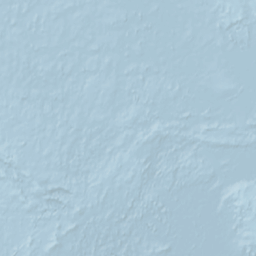
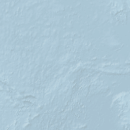

Itinéraire de Noyon 60400 vers 08001-08042 Barcelone (Espagne)
- Durée11h01
- Distance1145,3 km
- Carburant119,22 €
- Péages62,40 €
 


Noyon 60400
1. Prendre Boulevard Mony et continuer sur 350 m 0 m0 min
2. Prendre à gauche Avenue de la Libération et continuer sur 250 m 350 m1 min
3. Au rond-point Place Saint-Martin, prendre à gauche Boulevard Charmolue et continuer sur 600 m 600 m2 min
4. Au rond-point, continuer tout droit D145 et continuer sur 600 m 1,2 km4 min
5. Au rond-point, prendre à gauche Avenue Jean Jaurès et continuer sur 900 m 1,8 km6 min
6. Au rond-point, continuer tout droit D1032 et continuer sur 6,7 km 2,7 km8 min
7. Au rond-point, continuer tout droit D1032 et continuer sur 13,8 km 9,4 km16 min
D1032- A1
- Compiègne
- Thourotte
8. Prendre à droite N1031 et continuer sur 4,5 km 23,2 km24 min
9. Continuer tout droit (N31) et continuer sur 2,5 km 27,7 km27 min
10. Au rond-point, prendre à gauche N31 et continuer sur 3 km 30,2 km29 min
N31E46- A1
- Beauvais
- Rouen
- Arsy
- Estrées-Saint-Denis
- Clermont
11. Rejoindre A1/E15/E19 (Autoroute du Nord) et continuer sur 54,4 km 33,2 km31 min
A1- Paris
- Lille
Ticket de péage
Péage : 4.10 euros
12. Prendre à droite A3/E15 et continuer sur 9,2 km 87,6 km1h02
A3E15- A86
- A10
- Paris-Porte de Bagnolet
- Bobigny
- Centre Commercial Régional
13. Prendre à droite A86 (Périphérique de l'Île-de-France) et continuer sur 7,3 km 96,8 km1h09
- Bordeaux
- Nantes
- Lyon
- Fontenay-Sous-Bois
- Créteil
- Rosny-sous-Bois
- Montreuil-la-Boissière
14. Prendre à droite A4/A86/E50 (Autoroute de l'Est) et continuer sur 2,8 km 104,1 km1h17
15. Prendre à droite A86 (Périphérique de l'Île-de-France) et continuer sur 14,5 km 106,9 km1h19
A86- Bordeaux
- Nantes
- Lyon
- Maisons-Alfort
- Créteil
- Versailles
Zone de danger Maisons-Alfort
 Tunnel Guy Moquet
Tunnel du Moulin
Tunnel Guy Moquet
Tunnel du Moulin
16. Rejoindre A6b/E15/E50 (Autoroute du Soleil) et continuer sur 6,4 km 121,4 km1h30
- A6
- Bordeaux
- Nantes
- Lyon
- Evry
- Palaiseau
Zone de danger Massy
17. Prendre à droite A10/A126/E5/E50 (Route de Liaison) et continuer sur 2,5 km 127,8 km1h36
A10E50E5- Orléans
- Nantes
- Bordeaux
- Palaiseau
18. Prendre à droite A10/E5/E50 (L'Aquitaine) et continuer sur 7,9 km 130,3 km1h37
A10E50E5- Orléans
- Nantes
- Bordeaux
- Chartres
- Orsay
19. Continuer tout droit La Francilienne et continuer sur 1,4 km 138,2 km1h43
- N104
- Lyon
- Evry
- Orléans
- Linas
- Montlhéry
- Arpajon
20. Continuer tout droit L'Aquitaine et continuer sur 300 m 139,6 km1h44
21. Rejoindre A10 (L'Aquitaine) et continuer sur 96 km 139,9 km1h44
A10E50E5- Chartres
- Nantes
- Orléans
- Bordeaux
Zone de danger Briis-sous-Forges
A10E5- A11
- Bordeaux
- Orléans
Ticket de péage
Zone de danger Fresnay-l'Evêque
22. Rejoindre A71/E9 et continuer sur 606,7 km 235,9 km2h33
A71E9- A20
- Toulouse
- Clermont-Ferrand
- Vierzon
- Orléans-Centre
Zone de danger Marmagne
Zone de danger Doyet
Péage : 36.80 euros
Zone de danger Vieillespesse
Zone de danger Aumont-Aubrac
Péage : 9.80 euros
Viaduc de Millau (5075m)
Zone de danger Saint-Félix-de-l'Héras
23. Prendre la sortie 60 et continuer sur D13 et continuer sur 9,2 km 842,6 km7h52
- 60
- Nézignan-l'Evêque
- Vias
- Agde
24. Au rond-point, prendre à droite D13 et continuer sur 200 m 851,8 km8h00
25. Au rond-point, continuer tout droit et continuer sur 300 m 852 km8h00
- Béziers
- Montpellier
26. Rejoindre A9/E15/E80 (La Languedocienne) et continuer sur 132,4 km 852,3 km8h01
A9E80E15- Barcelone
- Toulouse
- Béziers
Ticket de péage
Péage : 11.70 euros
27. France 984,7 km9h10
28. Espagne 984,7 km9h10
29. Rejoindre AP-7 (Autopista de la Mediterrània) et continuer sur 22,4 km 984,7 km9h10
E-15Ap-7- Girona
- Barcelona
30. Rejoindre E-15 et continuer sur 44,2 km 1007,1 km9h23
E-15Ap-7- Girona
- Barcelona
31. Prendre à droite et continuer sur 1,9 km 1051,3 km9h47
- A-2
- Fornells de la Selva
- N-Ii
32. Continuer tout droit Autovia del Nord-est (A-2) et continuer sur 7,3 km 1053,2 km9h49
- Barcelona
33. Rejoindre A-2 et continuer sur 400 m 1060,5 km9h53
34. Rejoindre N-II 1060,9 km9h54
35. Rejoindre A-2 1060,9 km9h54
36. Rejoindre N-II et continuer sur 200 m 1060,9 km9h54
37. Continuer tout droit (A-2) et continuer sur 900 m 1061,1 km9h54
A-2- Tordera
- Barcelona
38. Rejoindre N-II et continuer sur 100 m 1062 km9h54
39. Rejoindre A-2 et continuer sur 1,3 km 1062,1 km9h54
40. Rejoindre N-II et continuer sur 800 m 1063,4 km9h55
A-2- Tordera
- Barcelona
41. Rejoindre A-2 et continuer sur 1,4 km 1064,2 km9h56
42. Rejoindre N-II et continuer sur 300 m 1065,6 km9h57
43. Rejoindre A-2 et continuer sur 100 m 1065,9 km9h57
44. Rejoindre N-II et continuer sur 700 m 1066 km9h57
45. Continuer tout droit Autovía del Nordeste (A-2) et continuer sur 12,8 km 1066,7 km9h57
N-Ii- Barcelona
46. Au rond-point, prendre à gauche Carrer de Madrid a França et continuer sur 1,1 km 1079,5 km10h07
N-Ii- Malgrat de Mar
- Barcelona
- C-32
Tordera
47. Au rond-point, continuer tout droit Carrer de Madrid a França et continuer sur 300 m 1080,6 km10h09
N-Ii- Barcelona
- Malgrat de Mar
48. Au rond-point, prendre à gauche Carrer de Madrid a França et continuer sur 100 m 1080,9 km10h09
49. Prendre à droite Carrer de Madrid a França et continuer sur 900 m 1081 km10h09
N-Ii- Barcelona
- Malgrat de Mar
El Mas Reixac
50. Au rond-point, prendre à gauche N-II et continuer sur 100 m 1081,9 km10h10
51. Prendre à droite et continuer sur 1 km 1082 km10h11
N-Ii- Malgrat de Mar
- Barcelona
52. Au rond-point, continuer tout droit N-II et continuer sur 200 m 1083 km10h11
53. Rejoindre C-32 (Autopista del Maresme) et continuer sur 46,5 km 1083,2 km10h12
Route à péage
C-32- Barcelona
Route à péage
Route à péage
Zone de danger Alella
54. Rejoindre C-31 (Autopista del Maresme) et continuer sur 12,8 km 1129,7 km10h39
C-31- Barcelona
- Glòries
Zone de danger Badalona
Barcelone
55. Prendre à droite Carrer de Padilla et continuer sur 200 m 1142,5 km10h50
56. Prendre à gauche Avinguda Diagonal et continuer sur 500 m 1142,7 km10h51
57. Continuer tout droit Carrer d'Aragó et continuer sur 1,2 km 1143,2 km10h54
58. Prendre à gauche Carrer de Pau Claris et continuer sur 600 m 1144,4 km10h57
59. Prendre à droite Ronda de Sant Pere et continuer sur 300 m 1145 km11h00
60. Zone piétonne : Stationner votre véhicule et continuer à pied 1145,3 km11h01
61. Prendre à droite Passeig de Gràcia1145,3 km11h01
08001-08042 Barcelone (Espagne)